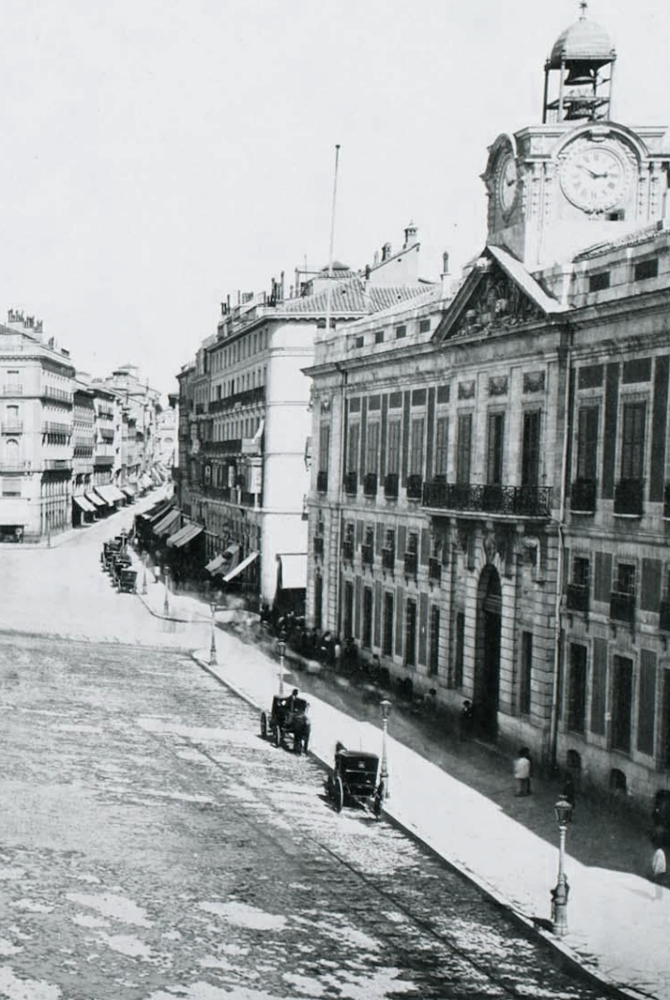

In 1882, Rizal left the Philippines to continue his education and broaden his horizons. Rizal spent some time in Spain, where he later became familiar with new ideas, cultures, and literature. His departure was significant for his life and development as he became more aware of his Filipino identity.